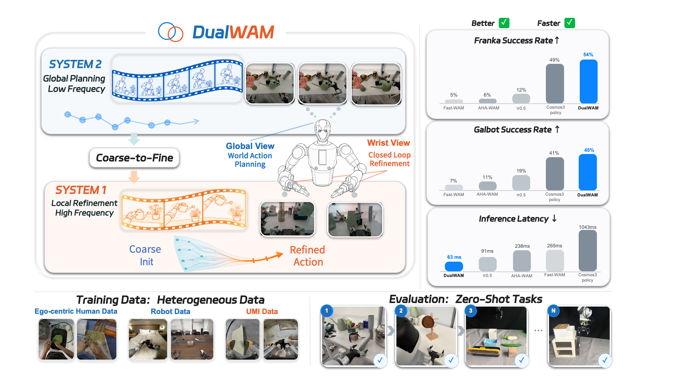
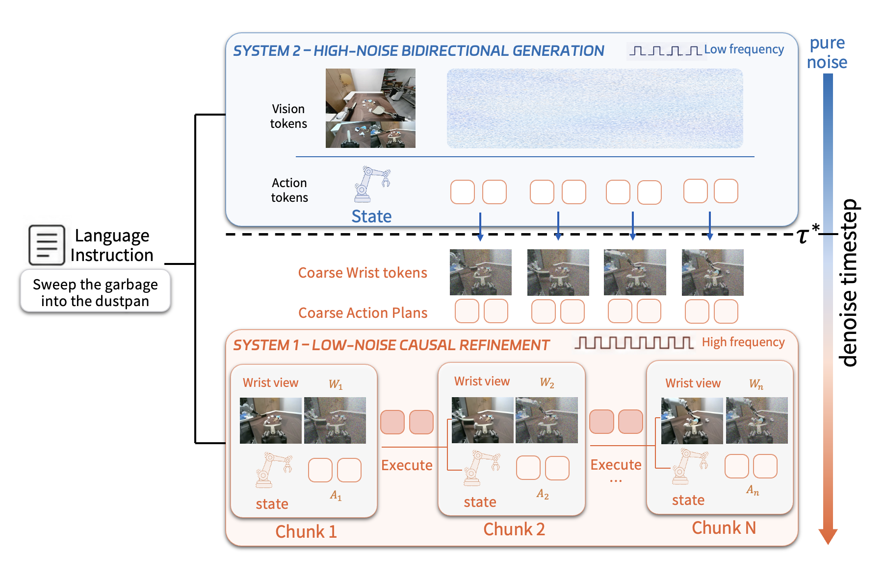
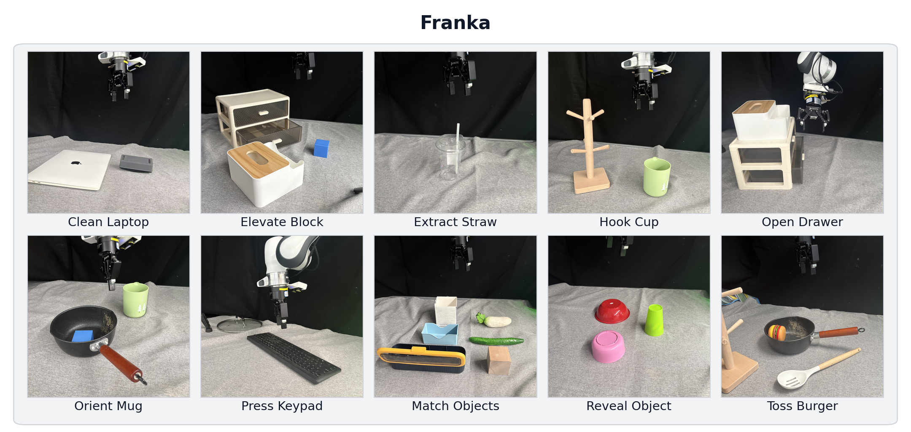
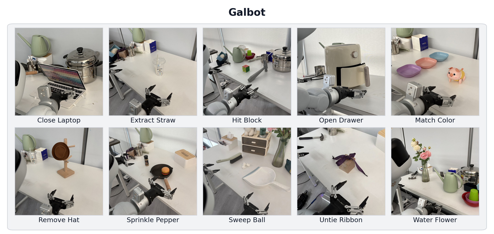
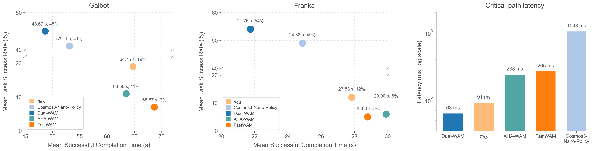

Better zero-shot generalization
1×
1×
Dual-System World Action Models for Asynchronous
Global Planning and Local Refinement
*Equal contribution †Co-corresponding authors

01 / METHOD

02 / METHOD
System 2 refreshes a global plan in the background while System 1 repeatedly denoises one temporally aligned action chunk.
03 / EVALUATION



Leveraging the model’s strong generalization capabilities, our policy can explore multiple interaction approaches to address the sudden problem in exceptional cases.
04 / CITATION
@misc{zheng2026dualwam,
title = {DualWAM: Dual-System World Action Models for
Asynchronous Global Planning and Local Refinement},
author = {Zheng, Yixin and Lyu, Jiangran and Deng, Yuntian and
Liu, Kai and Zhou, Yizhou and Wang, Yizhou and
Zhao, Xiaoguang and Wang, He and Zhang, Zhizheng},
year = {2026}
}